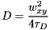
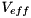
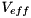
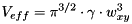
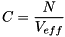
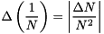
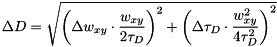
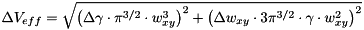
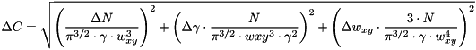

: overall particle number (including currently dark particles, e.g. in triplet state)
: overall particle number (including currently dark particles, e.g. in triplet state) : fraction of the particles in one of the first two non-fluorescent states (priplet, ...)
: fraction of the particles in one of the first two non-fluorescent states (priplet, ...) : lateral half axis of the focus gaussian
: lateral half axis of the focus gaussianThis model function implements a 3D normal diffusion FCS model, where the diffusion times (and therefore also the hydrodynamic radii) are distributed according to a gaussian distribution. It also supports up to two non-fluorescent species.:
$$bmath:g(\tau)=G_\infty+\frac{1}{N}\cdot X_{nf}(\tau)\cdot\sum_{k=0}^{K\cdot N_{decades}}\cdot\exp\left[-\frac{1}{2}\cdot\left(\frac{D_{k}-D_c}{\sigma(D)}\right)^2\right]\left(1+\frac{4D\cdot\tau}{w_{xy}^2}\right)^{-1}\cdot\left(1+\frac{4D\cdot\tau}{\gamma^2w_{xy}2}\right)^{-1/2}$$with
$$math:N_{nf}(\tau)= \frac{1-\Theta_{non}+\Theta_{non}\mathrm{e}^{-\tau/\tau_{non}}-\Theta_{trip}+\Theta_{trip}\mathrm{e}^{-\tau/\tau_{trip}}}{1-\Theta_{non}-\Theta_{trip}}.$$The parameters are:
: overall particle number (including currently dark particles, e.g. in triplet state): fraction of the particles in one of the first two non-fluorescent states (priplet, ...): lateral half axis of the focus gaussianThe values $$math:D_k$$ used in the sum of this fitting function are logarithmically spaced between the given minimum and maximum values $$math:D_{min}$$ and $$math:D_{max}$$, i.e. $$bmath:D_k={10^{\log_{10}(D_{min})+k/K}
Note: This model is relatively complex, as for every evaluation a sum has to be calculated. So it is wise to use a fast fit algorithm in conjunction with this model, like e.g. lmfit.
This model also calculates the diffusion coefficient, if the width of the laser focus (xy plane) is known, as:

where  is the diffusion time. Also the effective focal volume  is calculated:
is the diffusion time. Also the effective focal volume  is calculated:

Given this focal volume, the plugin may also calculate the particle concentration in the sample:

The plugin also calculates some parameter errors:




This model is based on ideas in the paper: